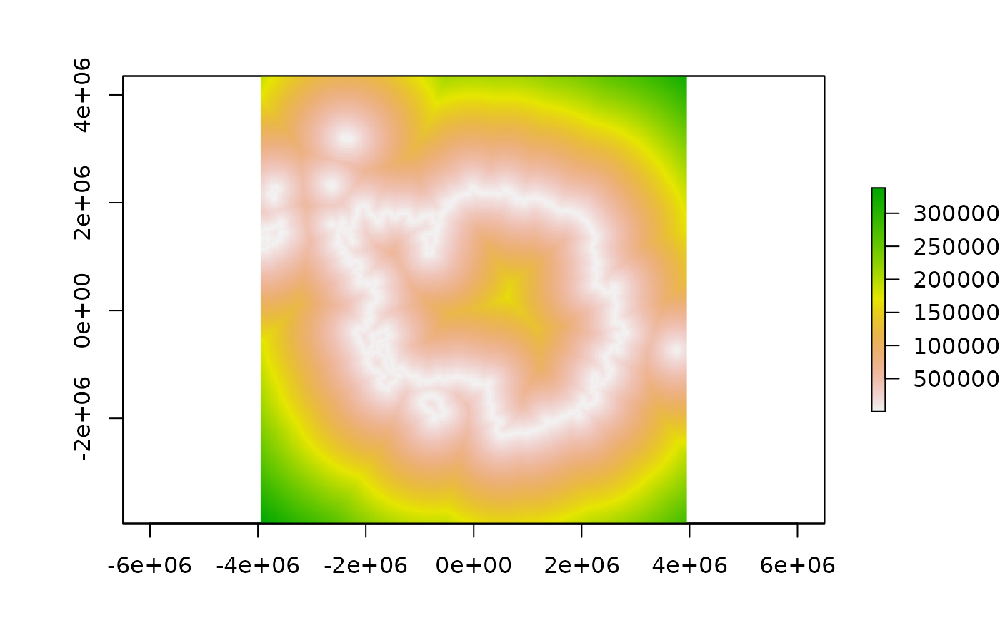

Calculate the shortest distance (metres) to a threshold sea ice contour. If in
doubt use distance_to_ice_edge, the definition of the edge is not straightforward, especially so for
the higher resolution products and near the coast.
distance_to_ice_edge computes a single "main" edge at continental scale
distance_to_ice computes all distances to any ice at threshold concentration
distance_to_ice_edge(
date,
threshold = 15,
xylim = NULL,
hemisphere = "south",
returnfiles = FALSE,
inputfiles = NULL,
latest = TRUE,
...
)
distance_to_ice(
date,
threshold = 15,
xylim = NULL,
hemisphere = "south",
returnfiles = FALSE,
inputfiles = NULL,
latest = TRUE,
...
)Arguments
- date
date or dates of data to read, see Details
- threshold
the sea ice concentration threshold to contour at
- xylim
spatial extents to crop from source data, can be anything accepted by
extent- hemisphere
"north" or "south", default is "south"
- returnfiles
ignore options and just return the file names and dates
- inputfiles
input the files data base to speed up initialization
- latest
if TRUE and date input is missing, return the latest time available otherwise the earliest
- ...
passed to brick, primarily for
filename
Value
raster layer with distances to this date's sea ice edge
Details
The distance is always positive, use readice in the usual way to determine if a
location is inside or out of the ice field itself. (If inside means zero distance to ice
for you then set it explicitly based on the concentration a point is in.)
Future work may generalize this to other data sources.
Note
beware that any queried location outside of this layer's range will be undetermined, and the external boundary of this layer is not constant with respect to the pole, and that in general a location may be closer to ice in the opposite hemisphere.
The argument hemisphere may be north or south (default is south), but this will only work if your locations
are on the actual map, so it's not possible to request the distance to ice in both poles for any point.
Examples
plot(distance_to_ice(latest = TRUE))

plot(distance_to_ice_edge(latest = TRUE))
 a = extract(distance_to_ice, aurora[17:25, ])
#> Warning: Discarded ellps unknown in Proj4 definition: +proj=stere +lat_0=-90 +lat_ts=-70 +lon_0=0 +x_0=0 +y_0=0 +a=6378273 +b=6356889.449 +units=m +no_defs +type=crs
#> Warning: Discarded datum unknown in Proj4 definition
#> Warning: 'tzone' attributes are inconsistent
extract(distance_to_ice, aurora[17:25, ], hemisphere = "south")
#> Warning: 'tzone' attributes are inconsistent
#> [1] 23745.89 23745.89 23745.89 23745.89 48006.72 21531.33 23499.99 23745.89
#> [9] 23745.89
# library(trip)
# extract(distance_to_ice_edge, walrus818[seq(50, 400, by = 20), ], hemisphere = "north")
a = extract(distance_to_ice, aurora[17:25, ])
#> Warning: Discarded ellps unknown in Proj4 definition: +proj=stere +lat_0=-90 +lat_ts=-70 +lon_0=0 +x_0=0 +y_0=0 +a=6378273 +b=6356889.449 +units=m +no_defs +type=crs
#> Warning: Discarded datum unknown in Proj4 definition
#> Warning: 'tzone' attributes are inconsistent
extract(distance_to_ice, aurora[17:25, ], hemisphere = "south")
#> Warning: 'tzone' attributes are inconsistent
#> [1] 23745.89 23745.89 23745.89 23745.89 48006.72 21531.33 23499.99 23745.89
#> [9] 23745.89
# library(trip)
# extract(distance_to_ice_edge, walrus818[seq(50, 400, by = 20), ], hemisphere = "north")